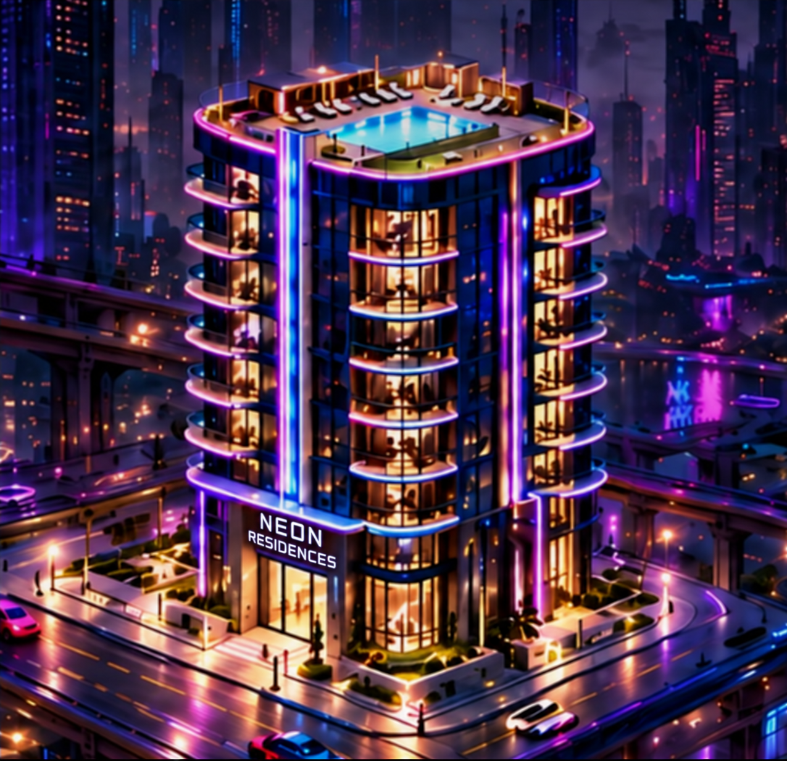
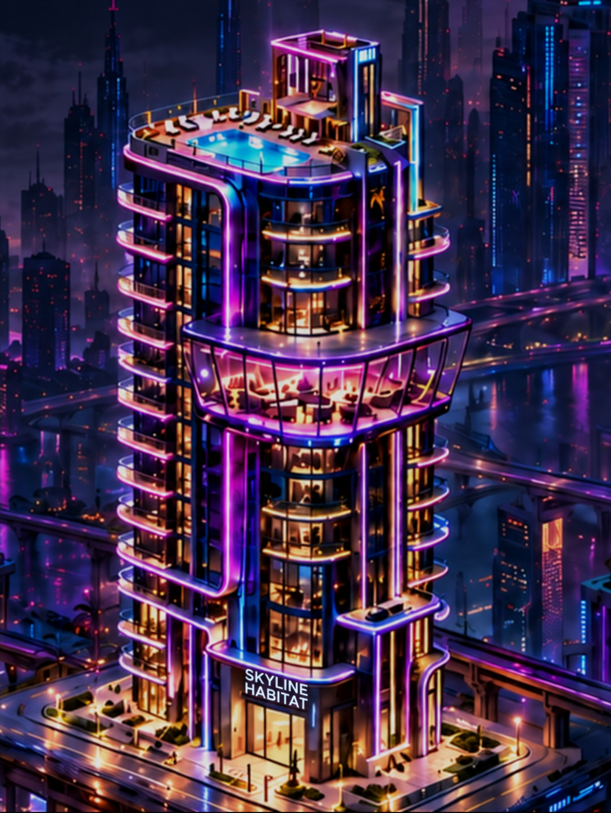
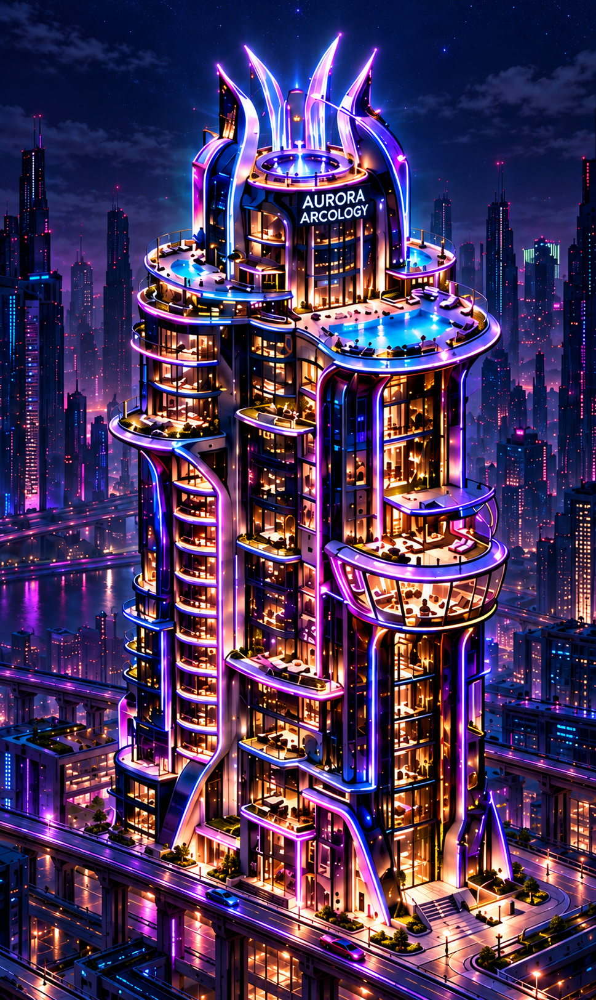
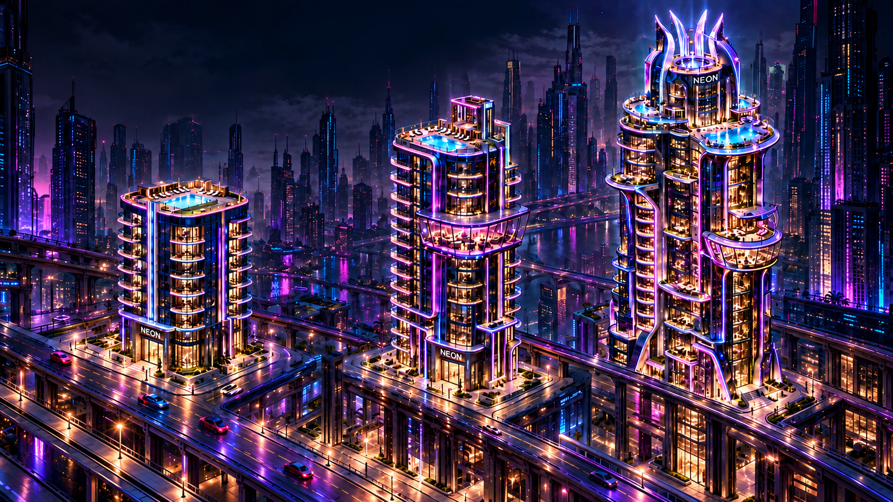

Agent-produced derivatives. Originals preserved. Not final NFT artwork or production integration. All three name-corrected candidates are available. Browser acceptance, common framing and screen-count verification remain open.




Compare architecture using the original shared scale. Candidate portraits have different framing; equal display width does not imply equal physical building height.